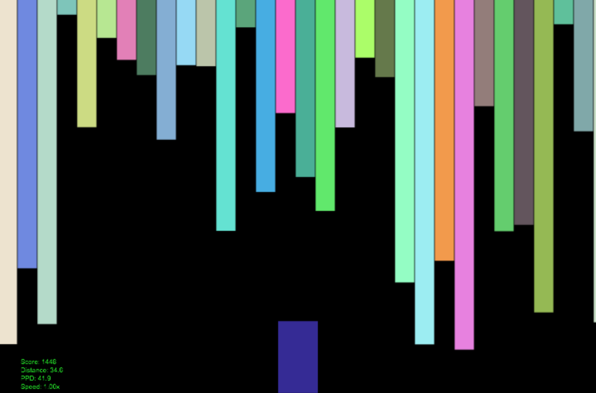

What sets me apart?
Sensible Communicator
My introspective nature and training equip me to help others understand both obstacles and solutions.
Gritty Pathfinder
I'm not afraid to try something outlandish or question anything.
Eclectic Bibliophile
I read a great deal to explore new ideas and keep my skills up-to-date.
Bio
My First Computer
My love of technology was fostered by a mid '90s AT&T computer with a 60 MHz processor, Windows 3.1, and a bunch of fun games like Red Baron and Typing Tutor. One of my favorite tech memories is when I found out our computer was getting a second hard drive with A WHOLE GIGABYTE OF STORAGE! Another is how thrilled I was to borrow and watch a promotional video for Windows 95 from some neighbors. One of my least favorite memories is when I asked at an electronics store what games an old IBM computer I inhereted could run. They laughed and said I should just use it as an anchor. I ignored their "advice".
Early Gaming
Speaking of video games, it's probably no surprise that I loved them from an early age. I was a huge SEGA Genesis / Sonic the Hedgehog fan (and still am - thank you Sonic Mania!). I used to beg my neighbor to let me play his Genesis until I found one under the Christmas tree. In fact, I taught myself what hexadecimal numbers were using the sound test screen in Sonic the Hedgehog 2. I can't see myself having such an interest in technology without either the SEGA Genesis or AT&T Computer entering my life.
Discovering Programming
In high school, I didn't take any programming classes primarily because, get this, they wouldn't inflate my GPA compared to other options. (I guess no one told me high school GPA doesn't matter after...high school. I've chilled out since then.) Instead, I focused on math and science and decided Meteorology might be a good fusion of those fields. Luckily, I took a Computer Science 101 course in the spring of my freshman year at the University of Miami. From there, I started plotting how to fit a Computer Science major into my degree.
Detour In Other Worlds
While I likely would have been very happy starting a technology career after finishing at the University of Miami, I decided to pursue a PhD in Atmospheric Science at Rutgers University. I was drawn in by climate modeling. How cool is it that by writing code you can get statistics on current and future climate? In particular, I have fond memories of creating "idealized worlds" - essentially drawing my own continents - in a simple climate model and watching what happened. Unfortunately, abstract research doesn't always pay the bills.
Finding Myself
I finished my degree and spent a year as a postdoctoral researcher cobbling together some scientific software to help with data analysis. In the process, I realized I loved writing the code and pouring through statistics but just didn't have much of a passion for the science itself anymore. I also surprised myself and married another PhD student, which made the prospect of constantly moving between the somewhat limited locations of employment in my field as often as each year even more unappealing. These factors led me to finally "flip the switch" and start a career in technology, and I often wonder why I didn't do that sooner. (I did meet my wife, her cat, and some of my best friends because of graduate school, so it was worth it in the end!)
Takeaway
Don't be afraid to pursue what you love, and it's never too late to find something new. I still am.
Fun Facts
- While I can play many instruments, I am most strongly connected to cello (including a 13-year hiatus) and piano.
-
My wife and I love board and card games; some of my favorites are:
- Ticket to Ride (particularly US and Pennsylvania)
- Wingspan
- Azul
- Mysterium
- Love Letter
- Quirkle
- My wife and I each built gaming computers for ourselves; it's not that hard, you should try it!
-
I have owned the following game consoles (* = current):
- SEGA
- Game Gear
- Genesis
- Dreamcast (RIP)
- Nintendo
- GameBoy Pocket
- Nintendo 64
- GameBoy Advance
- GameCube
- Super Nintendo (Used)
- Nintendo DS
- Wii
- Nintendo 3DS*
- Wii U
- Switch*
- Microsoft
- Xbox
- Xbox 360
FAQ
1) Wait, you have a PhD? Why are you doing web development?
Why not? Yes, I have a PhD, but at this stage in my life a career in technology is a better fit. I may write an article about my experience at some point in the future. In the meantime, check out my bio for more explanation.
2) But don't you want to be a professor?
Yes, I did at various points in my life. But a lot of people I've talked to are unaware that a PhD doesn't guarantee you a job as a professor. Here's a simple example that might illuminate why:
Let's say a professor mentors about 10 new PhD students (in 30-ish years) before retiring. Even if the number of academic positions doubled or so with each generation, 80% of those PhD graduates have to find something else to do. The other 20% have to really want it and I admire the commitment and sacrifice they make. But that life turned out not to be for me.
Some of it came down to personal choice. I wanted a career with less travel that would allow my family to choose where to settle down. Like many others, I'm also fortunate enough to have numerous interests.
This article from the New York Times explains the situation fairly well. I also like this one from The Economist.
3) Bitter much about #1 and #2?
No, I just have strong feelings about academia and the stigma around leaving it. I know people who are too afraid to leave and pursue a new career primarily because they don't want to disappoint advisors, family, etc. That's not healthy for anyone.
4) You've been a web developer since 2016; why have none of your job titles had "web" in their names?
Your guess is as good as mine.
Matthew Niznik, PhD
Email: matt@[thisSite]
Skills
Languages: Python (SciPy, Numpy, Matplotlib, Jupyter), JavaScript, PHP, Java
Research: Data Visualization, Numerical Modeling, Statistics, Technical Writing
Web: Laravel, Symfony, Django, MySQL, Bootstrap, HTML5, CSS, Apache, NGINX
Testing: Selenium, PHPUnit, Laravel Dusk, Codeception
Support: Git, Atlassian (Bitbucket, Jira, Confluence), GitHub, Jenkins, Bash scripting
OS: Linux (Ubuntu), Unix, Windows, MacOS
Education
Rutgers University (2010-2015)
Ph.D./M.S. in Atmospheric Science (3.94)
Dissertation
University of Miami (2006-2010)
B.S. in Computer Science and Meteorology/Math (3.99)
Employment
(Web) Application Programmer
Stowers Resource Management, Inc.
(Supporting Stowers Institute for Medical Research)
(2017 - Present)
- Responsible for building and supporting a custom web-based Laboratory Information Management System (LIMS) used by the Institute
- Lead developer on one of two teams upgrading older modules using legacy technology to our current tech stack (ExtJS & Symfony)
- Advocate/mentor for increasing our automated test coverage using Selenium/Codeception
(Web) Application Developer
Rutgers University
(2016 - 2017)
- Responsible for designing, building, testing, and deploying web applications that increased productivity and reduced costs for the Division of Continuing Studies
- Lead developer on a purchasing application that assists in tracking division inventory and spending habits
- Managed application servers and automated deployment process (Git/Jenkins)
- Enforced testing standards using PHPUnit and Laravel Dusk/Selenium
Post Doctoral Associate
University of Miami
(2015 - 2016)
- Designed and built ClickHist, an open-source, modular data analysis tool
- Performed statistical analyses of simulated extreme rainfall events across the globe
Tempt Your Fortune
Try it out here! [Source Code]
A JavaScript prototype of a classic game - can you avoid the Whomper?
Pastel Stalactites
Try it out here! [Source Code]
You are a rectangular, colorful spelunker who can stretch and shrink on a whim! Pastel stalactites of varying heights will tease, taunt, and tempt you to remain as tall as you can for maximum points. Don't hit your head!
Contact
matt@[thisSite]
Follow
GitHubTableau
Recommended
Kathleen WarrellAI Weirdness